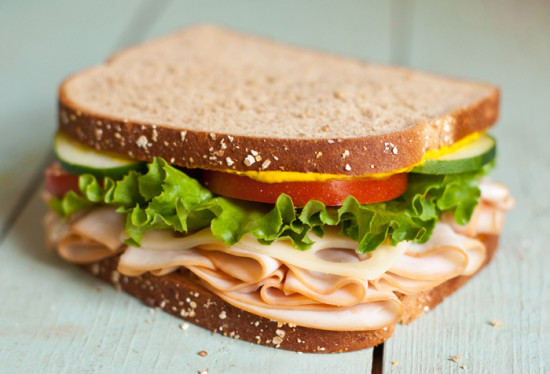

Sandwich

Building A Delicious Sandwich
Sandwiches can range from boring to superb,
the difference is quality of ingredients, finding the right combinations
of toppings, and of course, love.
To really take your sandwich game to an art form, read on:
Ingredients
- Good quality bread
- Ham slices from a spiral cut ham leg
- Sharp cheddar (or your favorite sharp cheese)
- Sweet pickles
- Mayo
- Mustard
Now to assemble this bad boy
- Set oven to 400 degrees
- Toast bread on ONE side
- Spread mayo on each toasted side of bread
- Add pickles first then a few stacks of ham
- Smear some mustard on top of that ham
- Finish with cheese slices and top of bread
- You better cut that sandwich diagonally